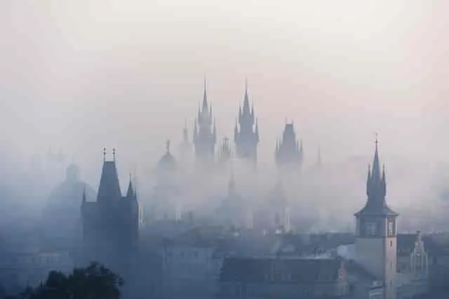

As 7 Igrejas
Introdução ao Estudo
Vamos estudar o tema das sete igrejas do Apocalipse. Abra sua Bíblia em Apocalipse, capítulo 2. Hoje, estudaremos um pouco do capítulo 2 e do capítulo 3. O livro trata do tema das sete igrejas, mas que igrejas são estas? No capítulo 1, versículos 10 e 11, João escreveu assim: "Achei-me em espírito no dia do Senhor e ouvi, por detrás de mim, grande voz como de trombeta, dizendo: 'O que vês, escreve em livro e manda às sete igrejas: Éfeso, Esmirna, Pérgamo, Tiatira, Sardes, Filadélfia e Laodiceia'".
O primeiro capítulo de Apocalipse introduz a primeira visão das sete igrejas. É interessante que Cristo se apresenta aqui após 65 anos do seu último encontro com João. O último encontro registrado entre eles foi lá no Mar de Tiberíades, em João, capítulo 21. Agora, João está meditando no "dia do Senhor" — um sábado. É o sábado que Jesus escolhe para aparecer a João, trazendo uma mensagem, uma revelação: a Revelação de Jesus Cristo, que é o Apocalipse. João recebe uma ordem: o que ele visse, deveria escrever e mandar para as sete igrejas.
A Geografia e o Propósito das Sete Igrejas
Quando você olha a geografia das igrejas na Ásia Menor, percebe que os nomes são dados no sentido horário: Éfeso, Esmirna, Pérgamo, Tiatira, Sardes, Filadélfia e Laodiceia, quase formando um círculo. Essas sete igrejas foram escolhidas pela providência divina por um motivo muito especial. Havia muitas outras, mas estas sete foram selecionadas porque falam de uma condição espiritual do povo nos dias de João, representando também sete períodos pelos quais o povo de Deus passaria ao longo da história.
Ao estudarmos as sete igrejas, temos a primeira pavimentação da era cristã. Depois, quando você estuda os sete selos, é um novo pavimento sobre o mesmo terreno. O mesmo ocorre com as sete trombetas. Tanto as igrejas quanto os selos e as trombetas referem-se à era cristã, começando com a primeira vinda de Cristo e indo até a Sua segunda vinda.
As Cartas e seus Períodos Históricos
Cada carta segue um padrão: uma apresentação que Cristo faz de Si mesmo, um elogio à igreja (com exceção de Laodiceia), um conselho e uma promessa.
- Éfeso (Ano 31 a 100): Representa o período da pureza apostólica, desde a crucificação de Jesus até a morte do último apóstolo, João. Jesus se apresenta como aquele que conserva as sete estrelas na mão direita e caminha entre os candeeiros, simbolizando que Ele nunca deixa Seu povo sozinho. É uma igreja pura, onde líderes como Paulo e Pedro (mortos por volta do ano 67) preservaram a teologia. Nesse período, ocorreu a destruição de Jerusalém (ano 70) e a construção do Coliseu, onde muitos cristãos foram martirizados.
- Esmirna (Ano 100 a 313): Jesus se apresenta como aquele que esteve morto e tornou a viver, confortando uma igreja que passaria pelo martírio. O texto menciona uma tribulação de "dez dias", que profeticamente representam os dez anos de perseguição intensa sob o imperador Diocleciano (303 a 313). Esse período termina com o Edito de Milão, promulgado por Constantino, trazendo tolerância ao cristianismo.
- Pérgamo (Ano 313 a 538): Com a oficialização do cristianismo pelo Estado, a igreja começa a se corromper. É o período da "entronização do Papa" e da união entre igreja e política. O paganismo se infiltra nas doutrinas e a pureza apostólica de Éfeso se perde. O título imperial de Pontifex Maximus (Sumo Pontífice) acaba sendo transferido para o Bispo de Roma.
- Tiatira (Ano 538 a 1517): Marca o início da supremacia papal e vai até a Reforma Protestante. Foi um período de severa perseguição aos fiéis, como os Valdenses e Albigenses. Os Valdenses, no norte da Itália, preservaram a Bíblia e guardaram o sábado, sendo caçados em cavernas e montanhas. O período termina quando Martinho Lutero prega suas 95 teses em 1517.
- Sardes (Ano 1517 a 1798): É a era dos reavivamentos e da Reforma, mas também de perseguições que persistiram, como o Massacre de São Bartolomeu. Termina em 1798, quando o Papa foi preso por ordem de Napoleão, encerrando a supremacia política de 1.260 anos do papado.
- Filadélfia (Ano 1798 a 1844): Período marcado por sinais no céu (como o sol escuro de 1780 e a queda das estrelas de 1833) e o grande despertamento espiritual liderado por Guilherme Miller, que estudou as profecias de Daniel e anunciou a volta de Jesus.
- Laodiceia (1844 até hoje): É o período em que vivemos. O nome significa "povo do juízo", pois em 1844 iniciou-se o juízo investigativo no santuário celestial. É uma igreja descrita como "morna", que se acha rica, mas está espiritualmente nua e cega.
O Conselho para os Nossos Dias
O problema não é "viver" no tempo de Laodiceia, mas "ser" um laodiceano. Jesus oferece um conselho tríplice para mudarmos nossa condição:
- Ouro refinado: Representa a fé e o amor. Sem fé para crer no invisível e amor para unir a igreja, o cristianismo é vazio.
- Vestiduras brancas: Simbolizam a justiça de Cristo. É a experiência de ser transformado por Ele, reconhecendo nossa fraqueza e aceitando que só Ele pode nos salvar.
- Colírio: Representa o Espírito Santo, que nos dá discernimento espiritual para entender os tempos em que vivemos.
Conclusão
Cristo caminha hoje entre nós, na igreja de Laodiceia. Ele quer nos ajudar a ser vitoriosos. Muitas vezes relutamos em fazer uma entrega total, mas Ele bate à porta. Que o nosso coração se abra à influência do Espírito, reconhecendo que não temos poder para mudar a nós mesmos, mas que a justiça de Cristo pode reverter nosso quadro de doença espiritual.
Oração: Pai, transforma o nosso coração para que sejamos o povo que o Senhor deseja. Por Cristo, nós oramos. Amém.
👉 ...
- Essencialista